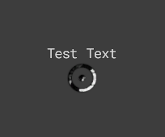

Module: task_location_point
Documentation last edited: October 23, 2025 at 14:33 UTC
Description

Видел этих мелких ублюдков, когда жмёшь Tab в игре? Они должны быть путеводными точками к твоему успеху. Ты следуешь за ними и попадаешь именно туда, где нужно быть. Как будто божественная рука управляет твоей волей, чтобы помочь в твоей священной миссии. Вот что это такое, и вот о чём этот модуль.
"res://modules/task_location_point/assets/scene/task_point.tscn"
содержит сцену с этой точкой задания, содержит всё, что тебе нужно.
Пример использования
# Добавляет точку задания со всеми настроенными параметрами
TaskPoints.add_task_point(
"test0",
"Очень чёртов test 0",
global_position,
false, # force_to_show
false, # ignore_chunks
"point_arrow.png"
)
# Обрабатывает удаление точки задания
TaskPoints.remove_task_point(key)
Или просто используй чёртов
ST_TaskPoint
General Information
Root directories list
assets, docs, src
Nodes
Classes
None
Resources
None
Other Scripts
None